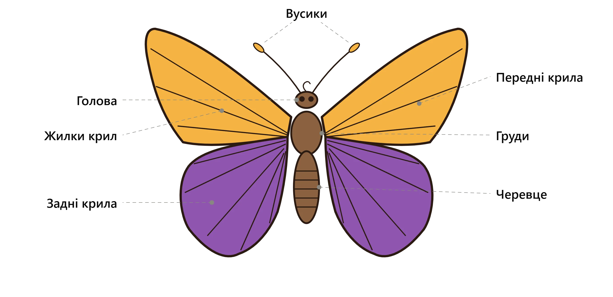
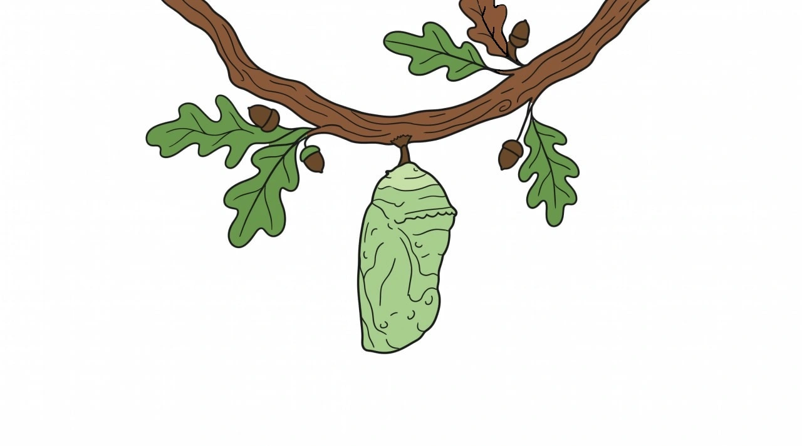

Анатомія та розвиток
- Вусики (антени): Головний орган нюху та дотику. Завдяки їм метелики вловлюють запахи квітів та феромони партнерів на відстані кількох кілометрів, а також орієнтуються в просторі під час польоту.
- Голова: Центр сприйняття інформації. На ній розташовані великі фасеткові очі, що забезпечують широкий кут зору (метелики чудово розрізняють кольори), та довгий гнучкий хоботок — ротовий апарат, який скручується у спіраль і слугує для висмоктування нектару з квітів.
- Груди: «Моторний відсік» метелика. Це міцна частина тіла, до якої кріпляться всі органи руху: три пари лапок знизу та дві пари крил зверху. Майже весь об'єм грудей займають потужні м'язи, що забезпечують змахи крилами.
- Черевце: Задня, найм'якша та найдовша частина тіла, що має сегментовану будову. У ній розміщені життєво важливі системи: органи травлення, дихання (повітря надходить через спеціальні отвори — дихальця) та розмноження.
- Передні крила: Головні «несучі» площини, які створюють основну підіймальну силу. Вони зазвичай більші за задні. Їхня поверхня вкрита тисячами дрібних лусочок, які накладаються одна на одну, як черепиця на даху, і створюють унікальний візерунок.
- Задні крила: Менша пара крил, яка працює синхронно з передніми. Вони допомагають метелику маневрувати, різко змінювати напрямок та стабілізувати політ. У багатьох видів (наприклад, у махаона) на задніх крилах є захисні плями або «хвостики».
- Жилки крил: Жорсткий каркас, що надає тонким крилам міцності та аеродинамічної пружності. Це порожнисті трубочки, по яких у момент виходу метелика з лялечки нагнітається гемолімфа (аналог крові), щоб розправити зібгані крила, після чого жилки твердіють назавжди.

Голометаболія: повне перетворення
Кожен метелик проходить дивовижний процес, який у біології називається голометаболією. Цей цикл складається з чотирьох абсолютно різних стадій:
- Яйце. Життя починається з крихітного яйця, яке самка прикріплює на нижню частину листа тієї рослини, якою харчуватиметься майбутнє потомство.
- Гусінь (Личинка). Головна мета цієї стадії — безперервно їсти та рости. Гусінь линяє кілька разів, скидаючи стару шкіру.
- Лялечка. Гусінь прикріплюється до гілочки та покривається твердою оболонкою. Всередині тіло комахи повністю розчиняється і формується заново.
- Імаго (Доросла комаха). З лялечки виходить сформований метелик. Його хоботок пристосований лише для пиття нектару.
